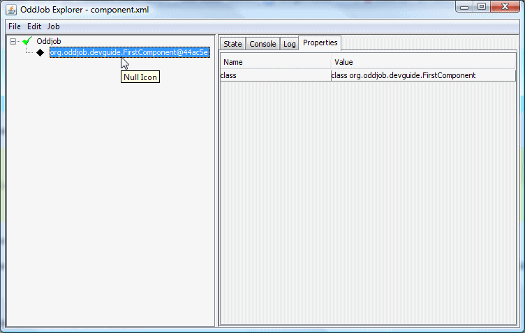
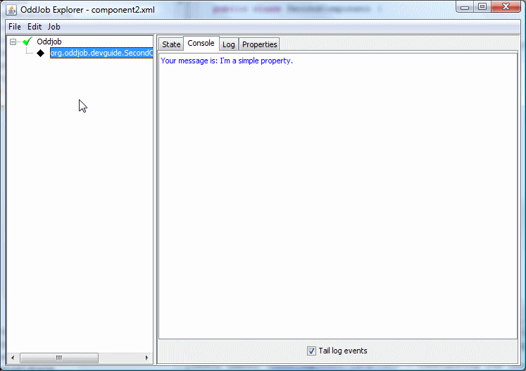
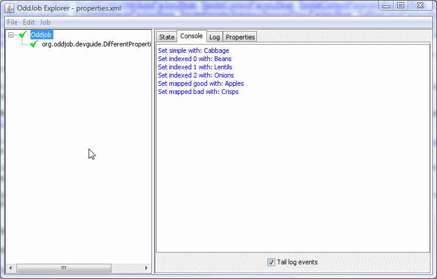
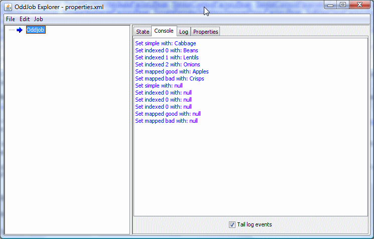
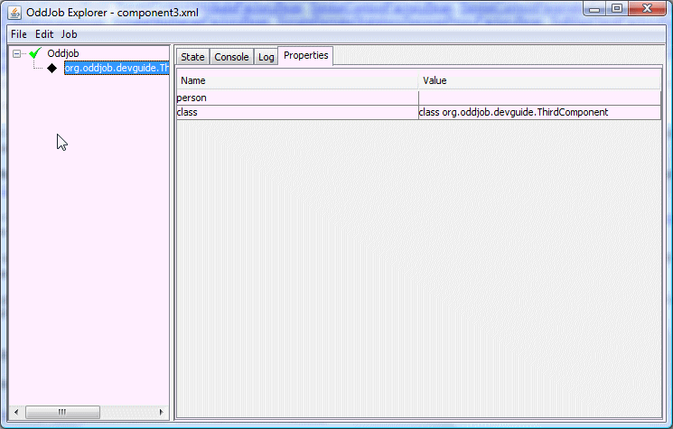
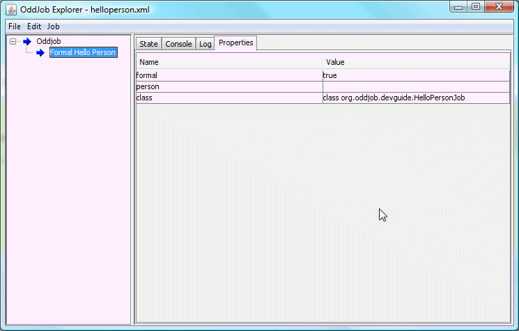
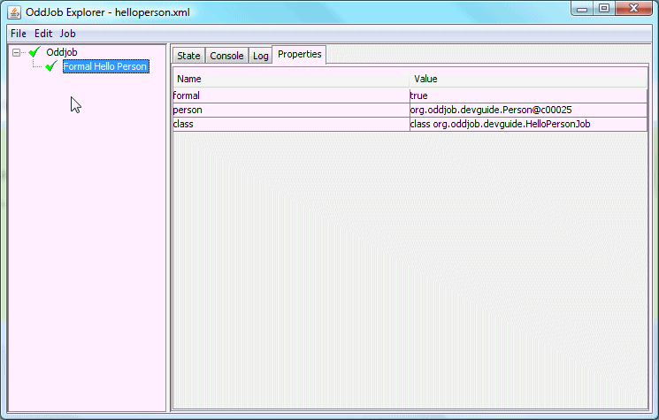

The underlying framework.
Arooa should actually be A.R.O.O.A but that's ugly and quite slow to type, so it's Arooa. I pronounce it like Aruba but without the 'b'.
A.R.O.O.A stands for A Rip Off Of Ant, and as it started life as a cut and paste of the Ant XML framework this is quite appropriate. After the decision was made to go POJO the code base changed quite a bit and it no longer resembles Ant much, but the name is cool.
So what does Arooa do? It does all the underlying creation and configuration of jobs. It does the runtime property injection. It provides the facility for component cut and paste.
Arooa is a self contained package within oddjob. If you wanted a
framework for your POJOs that provided drag and drop between
configuration files - you could do worse than copy the
org.odddjob.arooa
package and start hacking. You might wish to call it ArooArooa, but
then again you might not.
Arooa, like many application frameworks, uses the idea of a component. There are
many definitions of a component, but in Arooa it is simply a Java Bean. So a component
is any java.lang.Object with a no argument constructor.
Here is a really simple component.
package org.oddjob.devguide;
public class FirstComponent {
}
You can fire this up with oddjob using the following configuration:
<oddjob>
<job>
<bean class="org.oddjob.devguide.FirstComponent"/>
</job>
</oddjob>
Because our component isn't Runnable, Oddjob isn't treating it as a job, so you get a boring icon and you can see some properties - but not much else.
Despite Oddjob not being particularly interested in our simple component we'll keep going with Oddjob as the basis for our introduction of Arooa, as that's how we'll most often use it. Let's look at configuration.
Properties of our Java Objects are injected using the standard Java Bean setter methods.
package org.oddjob.devguide;
public class SecondComponent {
public void setMessage(String message) {
System.out.println("Your message is: " + message);
}
}
For the properties of primitive types, their Object counterparts, or String, the property is provided in the XML configuration as an attribute. The attribute name corresponds to the property name.
<oddjob>
<job>
<bean class="org.oddjob.devguide.SecondComponent" message="I'm a simple property."/>
</job>
</oddjob>
When loaded in Oddjob we see our property has been set.
This attribute value is said to be constant because it doesn't contain any runtime properties, i.e. no ${} expressions. Constant attribute values are set when the configuration file is first loaded. Runtime properties are set only when the framework is asked to configure a component. If we make our component Runnable, Oddjob will wrap it in a Proxy object that will ask Arooa to configure our component just before the run method is called.
Arooa also supports setting indexed properties with a
setXXX(int index, Object value) method and mapped properties
with a setXXX(String key, Object value) method.
Here's an example which has all three property types:
package org.oddjob.devguide;
public class DifferentPropertiesJob implements Runnable {
public void setSimple(Object something) {
System.out.println("Set simple with: " + something);
}
public void setIndexed(int index, Object something) {
System.out.println("Set indexed " + index + " with: " + something);
}
public void setMapped(String key, Object something) {
System.out.println("Set mapped " + key + " with: " + something);
}
public void run() {
}
}
In the XML configuration, the index is taken from the element order for indexed properties, and the key is taken from a special 'key' attribute for mapped properties.
<oddjob>
<job>
<bean class="org.oddjob.devguide.DifferentPropertiesJob">
<simple>
<value value="Cabbage"/>
</simple>
<indexed>
<value value="Beans"/>
<value value="Lentils"/>
<value value="Onions"/>
</indexed>
<mapped>
<value key="good" value="Apples"/>
<value key="bad" value="Crisps"/>
</mapped>
</bean>
</job>
</oddjob>
Here's the result:
Now try resetting Oddjob. Do you see the nulls?
What's happened? When Oddjob resets it destroys the Arooa configuration that it created. During destruction the framework sets null values into all it's configured setters. This came as a by-product of cut and paste but as it forces cleanup it seems like a good idea even for properties that don't support cut and paste. When capturing indexed and mapped properties we have to write the setters quite carefully. Here's an example:
package org.oddjob.devguide;
import java.util.ArrayList;
import java.util.HashMap;
import java.util.List;
import java.util.Map;
public class IndexedAndMappedJob implements Runnable {
private List<Object> indexed = new ArrayList<Object>();
private Map<String, Object> mapped = new HashMap<String, Object>();
public void setIndexed(int index, Object something) {
if (something == null) {
indexed.remove(index);
}
else {
indexed.add(index, something);
}
}
public void setMapped(String key, Object something) {
if (something == null) {
mapped.remove(key);
}
else {
mapped.put(key, something);
}
}
public void run() {
}
}
Now this does mean that we can't support a deliberate null in a list or a map but as yet this hasn't been a problem.
To define more complicated properties of a component, Arooa has the idea of values. A value, like a component, is a Java Bean. Here's one.
package org.oddjob.devguide;
public class Person {
private String title;
private String firstname;
private String surname;
public String getTitle() {
return title;
}
public void setTitle(String title) {
this.title = title;
}
public void setFirstname(String firstname) {
this.firstname = firstname;
}
public String getFirstname() {
return firstname;
}
public void setSurname(String surname) {
this.surname = surname;
}
public String getSurname() {
return surname;
}
}
And here's a component that uses it.
package org.oddjob.devguide;
public class ThirdComponent {
private Person person;
public void setPerson(Person person) {
this.person = person;
System.out.println("Person Set.");
}
public Person getPerson() {
return person;
}
}
Because our value is not one of the primitives or a String, the property is defined in the XML configuration as a child element where the element name corresponds to the property name.
<oddjob>
<job>
<bean class="org.oddjob.devguide.ThirdComponent">
<person>
<bean class="org.oddjob.devguide.Person" title="Mr" firstname="John" surname="Smith"/>
</person>
</bean>
</job>
</oddjob>
And here's what it looks like in Oddjob.
But our person hasn't been set! - Why not? All Values (even ones with constant properties) are only set during runtime configuration. And that's not happening of course, because our component isn't Runnable.
Here's a Runnable version. I've added a 'formal' property to change the style of greeting - because I was getting bored (The main cause of feature creep!):
package org.oddjob.devguide;
public class HelloPersonJob implements Runnable {
private Person person;
private boolean formal;
public void setPerson(Person person) {
this.person = person;
}
public Person getPerson() {
return person;
}
public boolean isFormal() {
return formal;
}
public void setFormal(boolean formal) {
this.formal = formal;
}
public void run() {
if (formal) {
System.out.println("Hello " +
person.getTitle() + " " +
person.getSurname() + ".");
}
else {
System.out.println("Hello " +
person.getFirstname() + "!");
}
}
public String toString() {
return (formal ? "Formal " : "Friendly ") + "Hello Person";
}
}
The configuration is pretty much as is, except with formal set to true.
<oddjob>
<job>
<bean class="org.oddjob.devguide.HelloPersonJob" formal="true">
<person>
<is title="Mr" firstname="John" surname="Smith"/>
</person>
</bean>
</job>
</oddjob>
Ah! but note the <is>
element. Because our property is a Java Bean type we can use this shorthand to
save typing the class. We can't use <is> for our component definition because
the job property of Oddjob is of type java.lang.Object, so <is> would
just create an Object - not much use.
Now when we open our configuration in Oddjob Explorer:
Our person property still isn't set (but the constant formal property has been). However when we run the job, the property gets set.
And that is a very brief introduction into Arooa.